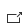

Porteføljenivået gir god oversikt over alle prosjektene i porteføljen. I denne oversikten kan du følge status på prosjekter, utvikling i gevinstrealisering og annen nøkkelinfo om prosjekter.
Merk at du ser bare prosjekter som du har tillatelse til å se. Dette baseres på rettighetene du er tildelt per prosjekt i Prosjektportalen 365.
Det er i porteføljenivået at standarddokumenter, standardoppgaver, standardinteressenter og standard fasesjekkpunkter blir vedlikeholdt.
På forsiden får du en oversikt over tilgjengelige prosjekter med nøkkelinfo om hvert prosjekt. Her kan du også opprette nye prosjekter.
1) Toppnavigasjon: Denne tar deg til forsiden i Prosjektportalen 365 eller direkte til ulike funksjoner i porteføljeområdet.
2) Ikon for denne installasjonen av Prosjektportalen. Dette kan tilpasses av administrator.
3) Opprett nytt prosjekt ved å trykke på «Opprett nytt prosjekt». Tilgangen til å opprette nye prosjekter styres på porteføljenivå.
5) Prosjektoversikt med mulighet for å søke på alle prosjekter i porteføljen som man har tilgang på. Her vises prosjektkort som lenker til prosjektet og viser prosjektets fase, prosjektleder og prosjekteier. Trykk på  nederst til venstre i hvert prosjektkort for å se ytterligere prosjektinformasjon.
6) Siste prosjekter gir oversikt over de siste prosjektene som er blitt opprettet i Prosjektportalen. Du ser bare prosjekter som du har tilgang til.
7) Nyheter viser artikler som er publisert på prosjektområdene.
I tillegg er det et område for lenker nederst på siden. Lenker kan brukes til å peke til nyttige områder eller dokumenter som er relevante for brukere av Prosjektportalen. Lenkene vises for alle brukere som har tilgang til porteføljenivået.